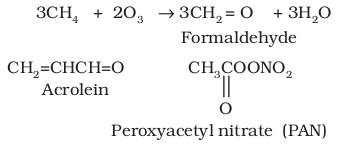
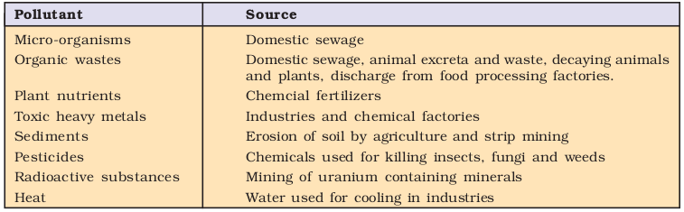
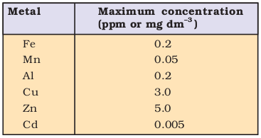
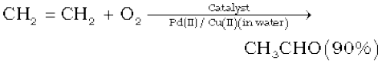

Unit 14
Environmental Chemistry
Environmental Chemistry

After studying this unit, you will be able to
“The world has achieved brilliance without wisdom, power without conscience. Ours is a world of nuclear giants and ethical infants.”
You have already studied about environment in your earlier classes. Environmental studies deal with the sum of all social, economical, biological, physical and chemical interrelations with our surroundings. In this unit the focus will be on environmental chemistry. Environmental chemistry deals with the study of the origin, transport, reactions, effects and fates of chemical species in the environment. Let us discuss some important aspects of environmental chemistry.
14.1 ENVIRONMENTAL POLLUTION
Environmental pollution is the effect of undesirable changes in our surroundings that have harmful effects on plants, animals and human beings. A substance, which causes pollution, is known as pollutant. Pollutants can be solid, liquid or gaseous substances present in greater concentration than in natural abundance and are produced due to human activities or due to natural happenings. Do you know, an average human being requires nearly 12-15 times more air than the food. So, even small amounts of pollutants in the air become significant compared to similar levels present in the food. Pollutants can be degradable, like discarded vegetables which rapidly break down by natural processes. On the other hand, pollutants which are slowly degradable, remain in the environment in an unchanged form for many decades. For example, substances such as dichlorodi-phenyltrichloroethane (DDT), plastic materials, heavy metals, many chemicals, nuclear wastes etc., once released into the environment are difficult to remove. These pollutants cannot be degraded by natural processes and are harmful to living organisms. In the process of environmental pollution, pollutants originate from a source and get transported by air or water or are dumped into the soil by human beings.
14.2 ATMOSPHERIC POLLUTION
The atmosphere that surrounds the earth is not of the same thickness at all heights. There are concentric layers of air or regions and each layer has different density. The lowest region of atmosphere in which the human beings along with other organisms live is called troposphere. It extends up to the height of ~ 10 km from sea level. Above the troposphere, between 10 and 50 km above sea level lies stratosphere. Troposphere is a turbulent, dusty zone containing air, much water vapour and clouds. This is the region of strong air movement and cloud formation. The stratosphere, on the other hand, contains dinitrogen, dioxygen, ozone and little water vapour.
Atmospheric pollution is generally studied as tropospheric and stratospheric pollution. The presence of ozone in the stratosphere prevents about 99.5 per cent of the sun’s harmful ultraviolet (UV) radiations from reaching the earth’s surface and thereby protecting humans and other animals from its effect.
14.2.1 Tropospheric Pollution
Tropospheric pollution occurs due to the presence of undesirable solid or gaseous particles in the air. The following are the major gaseous and particulate pollutants present in the troposphere:
1. Gaseous air pollutants: These are oxides of sulphur, nitrogen and carbon, hydrogen sulphide, hydrocarbons, ozone and other oxidants.
2. Particulate pollutants: These are dust, mist, fumes, smoke, smog etc.
1. Gaseous air pollutants
(a) Oxides of Sulphur: Oxides of sulphur are produced when sulphur containing fossil fuel is burnt. The most common species, sulphur dioxide, is a gas that is poisonous to both animals and plants. It has been reported that even a low concentration of sulphur dioxide causes respiratory diseases e.g., asthma, bronchitis, emphysema in human beings. Sulphur dioxide causes irritation to the eyes, resulting in tears and redness. High concentration of SO2 leads to stiffness of flower buds which eventually fall off from plants. Uncatalysed oxidation of sulphur dioxide is slow. However, the presence of particulate matter in polluted air catalyses the oxidation of sulphur dioxide to sulphur trioxide.
2SO2 (g) +O2 (g) → 2SO3(g)
The reaction can also be promoted by ozone and hydrogen peroxide.
SO2 (g) +O3 (g) → SO3(g) + O2 (g)
SO2(g) + H2O2(l) → H2SO4(aq)
(b) Oxides of Nitrogen: Dinitrogen and dioxygen are the main constituents of air. These gases do not react with each other at a normal temperature. At high altitudes when lightning strikes, they combine to form oxides of nitrogen. NO2 is oxidised to nitrate ion, which is washed into soil, where it serves as a fertilizer. In an automobile engine, (at high temperature) when fossil fuel is burnt, dinitrogen and dioxygen combine to yield significant quantities of nitric oxide (NO) and nitrogen dioxide ( NO2 ) as given below:
N2 (g) + O2 (g) 2NO(g)
NO reacts instantly with oxygen to give NO2
2NO (g) + O2 (g) → 2NO2 (g)
Rate of production of NO2 is faster when nitric oxide reacts with ozone in the stratosphere.
NO (g) + O3 (g) → NO2 (g) + O2 (g)
The irritant red haze in the traffic and congested places is due to oxides of nitrogen. Higher concentrations of NO2 damage the leaves of plants and retard the rate of photosynthesis. Nitrogen dioxide is a lung irritant that can lead to an acute respiratory disease in children. It is toxic to living tissues also. Nitrogen dioxide is also harmful to various textile fibres and metals.
(c) Hydrocarbons: Hydrocarbons are composed of hydrogen and carbon only and are formed by incomplete combustion of fuel used in automobiles. Hydrocarbons are carcinogenic, i.e., they cause cancer. They harm plants by causing ageing, breakdown of tissues and shedding of leaves, flowers and twigs.
(d) Oxides of Carbon
(i) Carbon monoxide: Carbon monoxide (CO) is one of the most serious air pollutants. It is a colourless and odourless gas, highly poisonous to living beings because of its ability to block the delivery of oxygen to the organs and tissues. It is produced as a result of incomplete combustion of carbon. Carbon monoxide is mainly released into the air by automobile exhaust. Other sources, which produce CO, involve incomplete combustion of coal, firewood, petrol, etc. The number of vehicles has been increasing over the years all over the world. Many vehicles are poorly maintained and several have inadequate pollution control equipments resulting in the release of greater amount of carbon monoxide and other polluting gases. Do you know why carbon monoxide is poisonous? It binds to haemoglobin to form carboxyhaemoglobin, which is about 300 times more stable than the oxygen-haemoglobin complex. In blood, when the concentration of carboxyhaemoglobin reaches about 3–4 per cent, the oxygen carrying capacity of blood is greatly reduced. This oxygen deficiency, results into headache, weak eyesight, nervousness and cardiovascular disorder. This is the reason why people are advised not to smoke. In pregnant women who have the habit of smoking the increased CO level in blood may induce premature birth, spontaneous abortions and deformed babies.
(ii) Carbon dioxide: Carbon dioxide (CO2) is released into the atmosphere by respiration, burning of fossil fuels for energy, and by decomposition of limestone during the manufacture of cement. It is also emitted during volcanic eruptions. Carbon dioxide gas is confined to troposphere only. Normally it forms about 0.03 per cent by volume of the atmosphere. With the increased use of fossil fuels, a large amount of carbon dioxide gets released into the atmosphere. Excess of CO2 in the air is removed by green plants and this maintains an appropriate level of CO2 in the atmosphere. Green plants require CO2 for photosynthesis and they, in turn, emit oxygen, thus maintaining the delicate balance. As you know, deforestation and burning of fossil fuel increases the CO2 level and disturb the balance in the atmosphere. The increased amount of CO2 in the air is mainly responsible for global warming.
Global Warming and Greenhouse Effect
About 75 % of the solar energy reaching the earth is absorbed by the earth’s surface, which increases its temperature. The rest of the heat radiates back to the atmosphere. Some of the heat is trapped by gases such as carbon dioxide, methane, ozone, chlorofluorocarbon compounds (CFCs) and water vapour in the atmosphere. Thus, they add to the heating of the atmosphere. This causes global warming.
We all know that in cold places flowers, vegetables and fruits are grown in glass covered areas called greenhouse. Do you know that we humans also live in a greenhouse? Of course, we are not surrounded by glass but a blanket of air called the atmosphere, which has kept the temperature on earth constant for centuries. But it is now undergoing change, though slowly. Just as the glass in a greenhouse holds the sun’s warmth inside, atmosphere traps the sun’s heat near the earth’s surface and keeps it warm. This is called natural greenhouse effect because it maintains the temperature and makes the earth perfect for life. In a greenhouse, solar radiations pass through the transparent glass and heat up the soil and the plants. The warm soil and plants emit infrared radiations. Since glass is opaque to infrared radiations (thermal region), it partly reflects and partly absorbs these radiations. This mechanism keeps the energy of the sun trapped in the greenhouse. Similarly, carbon dioxide molecules also trap heat as they are transparent to sunlight but not to the heat radiation. If the amount of carbon dioxide crosses the delicate proportion of 0.03 per cent, the natural greenhouse balance may get disturbed. Carbon dioxide is the major contributor to global warming.
Besides carbon dioxide, other greenhouse gases are methane, water vapour, nitrous oxide, CFCs and ozone. Methane is produced naturally when vegetation is burnt, digested or rotted in the absence of oxygen. Large amounts of methane are released in paddy fields, coal mines, from rotting garbage dumps and by fossil fuels. Chlorofluorocarbons (CFCs) are man-made industrial chemicals used in air conditioning etc. CFCs are also damaging the ozone layer (Section 14.2.2). Nitrous oxide occurs naturally in the environment. In recent years, their quantities have increased significantly due to the use of chemical fertilizers and the burning of fossil fuels. If these trends continue, the average global temperature will increase to a level which may lead to melting of polar ice caps and flooding of low lying areas all over the earth. Increase in the global temperature increases the incidence of infectious diseases like dengue, malaria, yellow fever, sleeping sickness etc.
Think it Over
What can we do to reduce the rate of global warming?
If burning of fossil fuels, cutting down forests and trees add to greenhouse gases in the atmosphere, we must find ways to use these just efficiently and judiciously. One of the simple things which we can do to reduce global warming is to minimise the use of automobiles. Depending upon the situation, one can use bicycle, public transport system, or go for carpool. We should plant more trees to increase the green cover. Avoid burning of dry leaves, wood etc. It is illegal to smoke in public places and work places, because it is harmful not only for the one who is smoking but also for others, and therefore, we should avoid it. Many people do not understand the greenhouse effect and the global warming. We can help them by sharing the information that we have.
ACID RAIN
We are aware that normally rain water has a pH of 5.6 due to the presence of H+ ions formed by the reaction of rain water
Fig. 14.1 Acid deposition
with carbon dioxide present in the atmosphere.
H2O (l) + CO2 (g) → H2CO3 (aq)
H2CO3 (aq) → H +(aq) + HCO3–(aq)
When the pH of the rain water drops below 5.6, it is called acid rain.
Acid rain refers to the ways in which acid from the atmosphere is deposited on the earth’s surface. Oxides of nitrogen and sulphur which are acidic in nature can be blown by wind along with solid particles in the atmosphere and finally settle down either on the ground as dry deposition or in water, fog and snow as wet deposition. (Fig. 14.1)
Acid rain is a byproduct of a variety of human activities that emit the oxides of sulphur and nitrogen in the atmosphere. As mentioned earlier, burning of fossil fuels (which contain sulphur and nitrogenous matter) such as coal and oil in power stations and furnaces or petrol and diesel in motor engines produce sulphur dioxide and nitrogen oxides. SO2 and NO2 after oxidation and reaction with water are major contributors to acid rain, because polluted air usually contains particulate matter that catalyse the oxidation.
2SO2 (g) + O2 (g) + 2H2O (l) → 2H2SO4 (aq)
4NO2 (g) + O2 (g)+ 2H2O (l) → 4HNO3 (aq)
Ammonium salts are also formed and can be seen as an atmospheric haze (aerosol of fine particles). Aerosol particles of oxides or ammonium salts in rain drops result in wet-deposition. SO2 is also absorbed directly on both solid and liquid ground surfaces and is thus deposited as dry-deposition.
Activity 1
You can collect samples of water from nearby places and record their pH values. Discuss your results in the class. Let us discuss how we can help to reduce the formation of acid rain.
This can be done by reducing the emission of sulphur dioxide and nitrogen dioxide in the atmosphere. We should use less vehicles driven by fossil fuels; use less sulphur content fossil fuels for power plants and industries. We should use natural gas which is a better fuel than coal or use coal with less sulphur content. Catalytic converters must be used in cars to reduce the effect of exhaust fumes on the atmosphere. The main component of the converter is a ceramic honeycomb coated with precious metals — Pd, Pt and Rh. The exhaust gases containing unburnt fuel, CO and NOx, when pass through the converter at 573 K, are converted into CO2 and N2. We can also reduce the acidity of the soil by adding powdered limestone to neutralise the acidity of the soil. Many people do not know of acid rain and its harmful effects. We can make them aware by passing on this information and save the Nature.
Taj Mahal and Acid Rain
The air around the city of Agra, where the Taj Mahal is located, contains fairly high levels of sulphur and nitrogen oxides. It is mainly due to a large number of industries and power plants around the area. Use of poor quality of coal, kerosene and firewood as fuel for domestic purposes add up to this problem. The resulting acid rain reacts with marble, CaCO3 of Taj Mahal
(CaCO3 +H2SO4 → CaSO4 + H2O+ CO2) causing damage to this wonderful monument that has attracted people from around the world. As a result, the monument is being slowly disfigured and the marble is getting discoloured and lustreless. The Government of India announced an action plan in early 1995 to prevent the disfiguring of this historical monument. Mathura refinery has already taken suitable measures to check the emission of toxic gases.
This plan aims at clearing the air in the ‘Taj Trapezium’– an area that includes the towns of Agra, Firozabad, Mathura and Bharatpur. Under this plan more than 2000 polluting industries lying inside the trapezium would switch over to the use of natural gas or liquefied petroleum gas instead of coal or oil. A new natural gas pipeline would bring more than half a million cubic metres of natural gas a day to this area. People living in the city will also be encouraged to use liquefied petroleum gas in place of coal, kerosene or firewood. Vehicles plying on highways in the vicinity of Taj would be encouraged to use low sulphur content diesel.
Acid rain is harmful for agriculture, trees and plants as it dissolves and washes away nutrients needed for their growth. It causes respiratory ailments in human beings and animals. When acid rain falls and flows as ground water to reach rivers, lakes etc. it affects plants and animal life in aquatic ecosystem. It corrodes water pipes resulting in the leaching of heavy metals such as iron, lead and copper into the drinking water. Acid rain damages buildings and other structures made of stone or metal. The Taj Mahal in India has been affected by acid rain.
2. Particulate Pollutants
Particulates pollutants are the minute solid particles or liquid droplets in air. These are present in vehicle emissions, smoke particles from fires, dust particles and ash from industries. Particulates in the atmosphere may be viable or non-viable. The viable particulates e.g., bacteria, fungi, moulds, algae etc., are minute living organisms that are dispersed in the atmosphere. Human beings are allergic to some of the fungi found in air. They can also cause plant diseases.
Non-viable particulates may be classified according to their nature and size as follows:
(a) Smoke particulates consist of solid or mixture of solid and liquid particles formed during combustion of organic matter. Examples are cigarette smoke, smoke from burning of fossil fuel, garbage and dry leaves, oil smoke etc.
(b) Dust is composed of fine solid particles (over 1µm in diameter), produced during crushing, grinding and attribution of solid materials. Sand from sand blasting, saw dust from wood works, pulverized coal, cement and fly ash from factories, dust storms etc., are some typical examples of this type of particulate emission.
(c) Mists are produced by particles of spray liquids and by condensation of vapours in air. Examples are sulphuric acid mist and herbicides and insecticides that miss their targets and travel through air and form mists.
(d) Fumes are generally obtained by the condensation of vapours during sublimation, distillation, boiling and several other chemical reactions. Generally, organic solvents, metals and metallic oxides form fume particles.
The effect of particulate pollutants are largely dependent on the particle size. Air- borne particles such as dust, fumes, mist etc., are dangerous for human health. Particulate pollutants bigger than 5 microns are likely to lodge in the nasal passage, whereas particles of about 10 micron enter into lungs easily.
Lead used to be a major air pollutant emitted by vehicles. Leaded petrol used to be the primary source of air-borne lead emission in Indian cities. This problem has now been overcome by using unleaded petrol in most of the cities in India. Lead interferes with the development and maturation of red blood cells.
Smog
The word smog is derived from smoke and fog. This is the most common example of air pollution that occurs in many cities throughout the world. There are two types of smog:
(a) Classical smog occurs in cool humid climate. It is a mixture of smoke, fog and sulphur dioxide. Chemically it is a reducing mixture and so it is also called as reducing smog.
(b) Photochemical smog occurs in warm, dry and sunny climate. The main components of the photochemical smog result from the action of sunlight on unsaturated hydrocarbons and nitrogen oxides produced by automobiles and factories. Photochemical smog has high concentration of oxidising agents and is, therefore, called as oxidising smog.
Formation of photochemical smog
When fossil fuels are burnt, a variety of pollutants are emitted into the earth’s troposphere. Two of the pollutants that are emitted are hydrocarbons (unburnt fuels) and nitric oxide (NO). When these pollutants build up to sufficiently high levels, a chain reaction occurs from their interaction with sunlight in which NO is converted into nitrogen dioxide (NO2). This NO2 in turn absorbs energy from sunlight and breaks up into nitric oxide and free oxygen atom (Fig. 14.2).
NO2(g)  NO(g) + O(g) (i)
NO(g) + O(g) (i)
Oxygen atoms are very reactive and combine with the O2 in air to produce ozone.
O(g) + O2 (g) O3 (g) (ii)
The ozone formed in the above reaction (ii) reacts rapidly with the NO(g) formed in the reaction (i) to regenerate NO2. NO2 is a brown gas and at sufficiently high levels can contribute to haze.
NO (g) + O3 (g) → NO2 (g) + O2 (g) (iii)
Ozone is a toxic gas and both NO2 and O3 are strong oxidising agents and can react with the unburnt hydrocarbons in the polluted air to produce chemicals such as formaldehyde, acrolein and peroxyacetyl nitrate (PAN).

Effects of photochemical smog
The common components of photochemical smog are ozone, nitric oxide, acrolein, formaldehyde and peroxyacetyl nitrate (PAN). Photochemical smog causes serious health problems. Both ozone and PAN act as powerful eye irritants. Ozone and nitric oxide irritate the nose and throat and their high concentration causes headache, chest pain, dryness of the throat, cough and difficulty in breathing. Photochemical smog leads to cracking of rubber and extensive damage to plant life. It also causes corrosion of metals, stones, building materials, rubber and painted surfaces.
Fig. 14.2 Photochemical smog occurs where sunlight acts on vehicle pollutants.
How can photochemical smog be controlled ?
Many techniques are used to control or reduce the formation of photochemical smog. If we control the primary precursors of photochemical smog, such as NO2 and hydrocarbons, the secondary precursors such as ozone and PAN, the photochemical smog will automatically be reduced. Usually catalytic converters are used in the automobiles, which prevent the release of nitrogen oxide and hydrocarbons to the atmosphere. Certain plants e.g., Pinus, Juniparus, Quercus, Pyrus and Vitis can metabolise nitrogen oxide and therefore, their plantation could help in this matter.
14.2.2 Stratospheric Pollution
Formation and Breakdown of Ozone
The upper stratosphere consists of considerable amount of ozone (O3), which protects us from the harmful ultraviolet (UV) radiations (λ 255 nm) coming from the sun. These radiations cause skin cancer (melanoma) in humans. Therefore, it is important to maintain the ozone shield.
Ozone in the stratosphere is a product of UV radiations acting on dioxygen (O2) molecules. The UV radiations split apart molecular oxygen into free oxygen (O) atoms. These oxygen atoms combine with the molecular oxygen to form ozone.
O2 (g) O(g) + O(g)
O(g) + O2 (g) O3 (g)
Ozone is thermodynamically unstable and decomposes to molecular oxygen. Thus, a dynamic equilibrium exists between the production and decomposition of ozone molecules. In recent years, there have been reports of the depletion of this protective ozone layer because of the presence of certain chemicals in the stratosphere. The main reason of ozone layer depletion is believed to be the release of chlorofluorocarbon compounds (CFCs), also known as freons. These compounds are nonreactive, non flammable, non toxic organic molecules and therefore used in refrigerators, air conditioners, in the production of plastic foam and by the electronic industry for cleaning computer parts etc. Once CFCs are released in the atmosphere, they mix with the normal atmospheric gases and eventually reach the stratosphere. In stratosphere, they get broken down by powerful UV radiations, releasing chlorine free radical.
CF2Cl2 (g) 
 (g) +
(g) +  F2Cl (g) (i)
F2Cl (g) (i)
The chlorine radical then react with stratospheric ozone to form chlorine monoxide radicals and molecular oxygen.
 l (g) + O3 (g) → Cl (g) + O2 (g) (ii)
l (g) + O3 (g) → Cl (g) + O2 (g) (ii)
Reaction of chlorine monoxide radical with atomic oxygen produces more chlorine radicals.
Cl (g) + O (g) →
(g) + O (g) →  l (g) + O2 (g) (iii)
l (g) + O2 (g) (iii)
The chlorine radicals are continuously regenerated and cause the breakdown of ozone. Thus, CFCs are transporting agents for continuously generating chlorine radicals into the stratosphere and damaging the ozone layer.
The Ozone Hole
In 1980s atmospheric scientists working in Antarctica reported about depletion of ozone layer commonly known as ozone hole over the South Pole. It was found that a unique set of conditions was responsible for the ozone hole. In summer season, nitrogen dioxide and methane react with chlorine monoxide (reaction iv) and chlorine atoms (reaction v) forming chlorine sinks, preventing much ozone depletion, whereas in winter, special type of clouds called polar stratospheric clouds are formed over Antarctica. These polar stratospheric clouds provide surface on which chlorine nitrate formed (reaction iv) gets hydrolysed to form hypochlorous acid (reaction (vi)). It also reacts with hydrogen chloride produced as per reaction (v) to give molecular chlorine.
Cl (g) + NO2 (g) → ClONO2(g) (iv)
(g) + NO2 (g) → ClONO2(g) (iv)
 l (g) + CH4 (g) →
l (g) + CH4 (g) →  H3(g) + HCl(g) (v)
H3(g) + HCl(g) (v)
ClONO2(g) + H2O (g) → HOCl (g) + HNO3 (g) (vi)
ClONO2(g) + HCl (g) → Cl2 (g) + HNO3 (g) (vii)
When sunlight returns to the Antarctica in the spring, the sun’s warmth breaks up the clouds and HOCl and Cl2 are photolysed by sunlight, as given in reactions (viii) and (ix).
HOCl (g) H (g) +  l(g) (viii)
l(g) (viii)
Cl2 (g)  2
2 l (g) (ix)
l (g) (ix)
The chlorine radicals thus formed, initiate the chain reaction for ozone depletion as described earlier.
Effects of Depletion of the Ozone Layer
With the depletion of ozone layer, more UV radiation filters into troposphere. UV radiations lead to ageing of skin, cataract, sunburn, skin cancer, killing of many phytoplanktons, damage to fish productivity etc. It has also been reported that plant proteins get easily affected by UV radiations which leads to the harmful mutation of cells. It also increases evaporation of surface water through the stomata of the leaves and decreases the moisture content of the soil. Increase in UV radiations damage paints and fibres, causing them to fade faster.
14.3 WATER POLLUTION
Water is essential for life. Without water there would be no life. We usually take water as granted for its purity, but we must ensure the quality of water. Pollution of water originates from human activities. Through different paths, pollution reaches surface or ground water. Easily identified source or place of pollution is called as point source. e.g., municipal and industrial discharge pipes where pollutants enter the water-source. Non point sources of pollution are those where a source of pollution cannot be easily identified, e.g., agricultural run off (from farm, animals and crop-lands), acid rain, storm-water drainage (from streets, parking lots and lawns), etc. Table 14.1 lists the major water pollutants and their sources.
Table 14.1 Major Water Pollutants

14.3.1 Causes of Water Pollution
(i) Pathogens: The most serious water pollutants are the disease causing agents called pathogens. Pathogens include bacteria and other organisms that enter water from domestic sewage and animal excreta. Human excreta contain bacteria such as Escherichia coli andStreptococcus faecalis which cause gastrointestinal diseases.
(ii) Organic wastes: The other major water pollutant is organic matter such as leaves, grass, trash etc. They pollute water as a consequence of run off. Excessive phytoplankton growth within water is also a cause of water pollution. These wastes are biodegradable.
The large population of bacteria decomposes organic matter present in water. They consume oxygen dissolved in water. The amount of oxygen that water can hold in the solution is limited. In cold water, dissolved oxygen (DO) can reach a concentration up to 10 ppm (parts per million), whereas oxygen in air is about 200,000 ppm. That is why even a moderate amount of organic matter when decomposes in water can deplete the water of its dissolved oxygen. The concentration of dissolved oxygen in water is very important for aquatic life . If the concentration of dissolved oxygen of water is below 6 ppm, the growth of fish gets inhibited. Oxygen reaches water either through atmosphere or from the process of photosynthesis carried out by many aquatic green plants during day light. However, during night, photosynthesis stops but the plants continue to respire, resulting in reduction of dissolved oxygen. The dissolved oxygen is also used by microorganisms to oxidise organic matter.
If too much of organic matter is added to water, all the available oxygen is used up. This causes oxygen dependent aquatic life to die. Thus, anaerobic bacteria (which do not require oxygen) begin to break down the organic waste and produce chemicals that have a foul smell and are harmful to human health. Aerobic (oxygen requiring) bacteria degrade these organic wastes and keep the water depleted in dissolved oxygen.
Thus, the amount of oxygen required by bacteria to break down the organic matter present in a certain volume of a sample of water, is called Biochemical Oxygen Demand (BOD). The amount of BOD in the water is a measure of the amount of organic material in the water, in terms of how much oxygen will be required to break it down biologically. Clean water would have BOD value of less than 5 ppm whereas highly polluted water could have a BOD value of 17 ppm or more.
(iii) Chemical Pollutants: As we know that water is an excellent solvent, water soluble inorganic chemicals that include heavy metals such as cadmium, mercury, nickel etc constitute an important class of pollutants. All these metals are dangerous to humans because our body cannot excrete them. Over the time, it crosses the tolerance limit. These metals then can damage kidneys, central nervous system, liver etc. Acids (like sulphuric acid) from mine drainage and salts from many different sources including raw salt used to melt snow and ice in the colder climates (sodium and calcium chloride) are water soluble chemical pollutants.
The organic chemicals are another group of substances that are found in polluted water. Petroleum products pollute many sources of water e.g., major oil spills in oceans. Other organic substances with serious impacts are the pesticides that drift down from sprays or runoff from lands. Various industrial chemicals like polychlorinated biphenyls, (PCBs) which are used as cleansing solvent, detergents and fertilizers add to the list of water pollutants. PCBs are suspected to be carcinogenic. Nowadays most of the detergents available are biodegradable. However, their use can create other problems. The bacteria responsible for degrading biodegradable detergent feed on it and grow rapidly. While growing, they may use up all the oxygen dissolved in water. The lack of oxygen kills all other forms of aquatic life such as fish and plants. Fertilizers contain phosphates as additives. The addition of phosphates in water enhances algae growth. Such profuse growth of algae, covers the water surface and reduces the oxygen concentration in water. This leads to anaerobic conditions, commonly with accumulation of abnoxious decay and animal death. Thus, bloom-infested water inhibits the growth of other living organisms in the water body. This process in which nutrient enriched water bodies support a dense plant population, which kills animal life by depriving it of oxygen and results in subsequent loss of biodiversity is known as Eutrophication.
14.3.2 International Standards for Drinking Water
The International Standards for drinking water are given below and they must be followed.
Fluoride: For drinking purposes, water should be tested for fluoride ion concentration. Its deficiency in drinking water is harmful to man and causes diseases such as tooth decay etc. Soluble fluoride is often added to drinking water to bring its concentration upto 1 ppm or 1 mg dm–3. The F– ions make the enamel on teeth much harder by converting hydroxyapatite, [3(Ca3(PO4)2.Ca(OH)2], the enamel on the surface of the teeth, into much harder fluorapatite, [3(Ca3(PO4)2.CaF2]. However, F– ion concentration above 2 ppm causes brown mottling of teeth. At the same time, excess fluoride (over 10 ppm) causes harmful effect to bones and teeth, as reported from some parts of Rajasthan.
Lead: Drinking water gets contaminated with lead when lead pipes are used for transportation of water. The prescribed upper limit concentration of lead in drinking water is about 50 ppb. Lead can damage kidney, liver, reproductive system etc.
Sulphate: Excessive sulphate (>500 ppm) in drinking water causes laxative effect, otherwise at moderate levels it is harmless.
Nitrate: The maximum limit of nitrate in drinking water is 50 ppm. Excess nitrate in drinking water can cause disease such as methemoglobinemia (‘blue baby’ syndrome).
Other metals: The maximum concentration of some common metals recommended in drinking water are given in Table 14.2.
Table 14.2 Maximum Prescribed Concen-tration of Some Metals in Drinking Water.

Activity 2
You can visit local water sources and observe if the river/lake/tank/pond are unpolluted/slightly polluted/ moderately polluted or severely polluted by looking at water or by checking pH of water. Document the name of the river and the nearby urban or industrial site from where the pollution is generated. Inform about this to Pollution Control Board’s office set up by Government to measure pollution levels. Ensure that appropriate action is taken. You can write to the press also. Do not dump waste into a household or industrial drain which can enter directly to any water body, such as, river, pond, stream or lake. Use compost instead of chemical fertilizers in gardens. Avoid the use of pesticides like DDT, malathion etc., at home and try to use dried neem leaves to help keep insects away. Add a few crystals of potassium permanganate (KMnO4) or bleaching powder to the water tank of your house.
14.4 SOIL POLLUTION
India being an agriculture based economy gives high priority to agriculture, fisheries and livestock development. The surplus production is stored by governmental and non-governmental organisations for the lean season. The food loss during the storage also needs special attention. Have you ever seen the damages caused to the crops, food items by insects, rodents, weeds and crop diseases etc? How can we protect them? You are acquainted with some insecticides and pesticides for protection of our crops. However, these insecticides, pesticides and herbicides cause soil pollution. Hence, there is a need for their judicious use.
14.4.1 Pesticides
Prior to World War II, many naturally occurring chemicals such as nicotine (by planting tobacco plants in the crop field), were used as pest controlling substance for major crops in agricultural practices.
During World War II, DDT was found to be of great use in the control of malaria and other insect-borne diseases. Therefore, after the war, DDT was put to use in agriculture to control the damages caused by insects, rodents, weeds and various crop diseases. However, due to adverse effects, its use has been banned in India.
Pesticides are basically synthetic toxic chemicals with ecological repercussions. The repeated use of the same or similar pesticides give rise to pests that are resistant to that group of pesticides thus making the pesticides ineffective. Therefore, as insect resistance of DDT increased, other organic toxins such as Aldrin and Dieldrin were introduced in the market by pesticide industry. Most of the organic toxins are water insoluble and non-biodegradable.
These high persistent toxins are, therefore, transferred from lower trophic level to higher trophic level through food chain (Fig.14.3). Over the time, the concentration of toxins in higher animals reach a level which causes serious metabolic and physiological disorders.
Fig. 14.3 At each trophic level, the pollutant gets 10 times concentrated.
In response to high persistence of chlorinated organic toxins, a new series of less persistent or more bio-degradable products called organo-phosphates and carbamates have been introduced in the market. But these chemicals are severe nerve toxins and hence more harmful to humans. As a result, there are reports of some pesticides related deaths of agricultural field workers. Insects have become resistant to these insecticides also. The insecticide industry is engaged in developing new groups of insecticides. But one has to think, is this the only solution to pest menace?
These days, the pesticide industry has shifted its attention to herbicides such as sodium chlorate (NaClO3), sodium arsinite (Na3AsO3) and many others. During the first half of the last century, the shift from mechanical to chemical weed control had provided the industry with flourishing economic market. But one must remember that these are also not environment friendly.
Most herbicides are toxic to mammals but are not as persistent as organo-chlorides. These chemicals decompose in a few months. Like organo-chlorides, these too become concentrated in the food web. Some herbicides cause birth defects. Studies show that corn-fields sprayed with herbicides are more prone to insect attack and plant disease than fields that are weeded manually.
Pesticides and herbicides represent only a very small portion of widespread chemical pollution. A large number of other compounds that are used regularly in chemical and industrial processes for manufacturing activities are finally released in the atmosphere in one or other form.
14.5 INDUSTRIAL WASTE
Industrial solid wastes are also sorted out as biodegradable and non-degradable wastes. Biodegradable wastes are generated by cotton mills, food processing units, paper mills, and textile factories.
Non-biodegradable wastes are generated by thermal power plants which produce fly ash; integrated iron and steel plants which produce blast furnace slag and steel melting slag. Industries manufacturing aluminium, zinc and copper produce mud and tailings. Fertilizer industries produce gypsum. Hazardous wastes such as inflammables, composite explosives or highly reactive substances are produced by industries dealing in metals, chemicals, drugs, pharma-ceuticals, dyes, pesticides, rubber goods etc.
The disposal of non-degradable industrial solid wastes, if not done by a proper and suitable method, may cause serious threat to the environment. New innovations have led to different uses of waste material. Nowadays, fly ash and slag from the steel industry are utilised by the cement industry. Large quantities of toxic wastes are usually destroyed by controlled incineration, whereas small quantities are burnt along with factory garbage in open bins. Moreover, solid wastes if not managed effectively, affect the components of the environment.
Do you know about waste recycling?
14.6 STRATEGIES TO CONTROL ENVIRONMENTAL POLLUTION
After studying air, water, soil and industrial waste pollution in this unit, by now you must have started feeling the need of controlling environmental pollution: How can you save your immediate environment? Think of the steps/activities, which you would like to undertake for controlling air, water, soil and industrial waste pollution in your neighbourhood. Here, an idea about the strategies for the management of waste is given.
14.6.1 Waste Management
Solid waste is not the only waste, which you see in your household garbage box. Besides household discards, there are medical, agricultural, industrial and mining wastes. The improper disposal of wastes is one of the major causes of environmental degradation. Therefore, the management of wastes is of utmost importance.
Collection and Disposal
Domestic wastes are collected in small bins, which are then transferred to community bins by private or municipal workers. From these community bins, these are collected and carried to the disposable site. At the site, garbage is sorted out and separated into biodegradable and non-biodegradable materials. Non-biodegradable materials such as plastic, glass, metal scraps etc. are sent for recycling. Biodegradable wastes are deposited in land fills and are converted into compost.
The waste if not collected in garbage bins, finds its way into the sewers. Some of it is eaten by cattle. Non-biodegradable wastes like polythene bag, metal scraps, etc. choke the sewers and cause inconvenience. Polythene bags, if swallowed by cattle can cost their lives also.
As a normal practice, therefore, all domestic wastes should be properly collected and disposed. The poor management causes health problems leading to epidemics due to contamination of ground water. It is specially hazardous for those who are in direct contact with the waste such as rag pickers and workers involved in waste disposal, as they are the ones who handle waste materials mostly without protective device such as gloves or water proof boots and gas masks. What can you do for them?
14.7 GREEN CHEMISTRY
14.7.1 Introduction
It is well known fact that self-sufficiency in food has been achieved in India since late 20th century by using fertilizers and pesticides and exploring improved methods of farming, good quality seeds, irrigation etc. But over-exploitation of soil and excessive use of fertilizers and pesticides have resulted in the deterioration of soil, water and air.
The solution of this problem does not lie in stopping the process of development that has been set in; but to discover methods, which would help in the reduction of deterioration of the environment. Green chemistry is a way of thinking and is about utilising the existing knowledge and principles of chemistry and other sciences to reduce the adverse impact on environment. Green chemistry is a production process that would bring about minimum pollution or deterioration to the environment. The byproducts generated during a process, if not used gainfully, add to the environmental pollution. Such processes are not only environmental unfriendly but also cost-ineffective. The waste generation and its disposal both are economically unsound. Utilisation of existing knowledge base for reducing the chemical hazards along with the developmental activities is the foundation of green chemistry. Have you perceived the idea of green chemistry ? It is well known that organic solvents such as benzene, toluene, carbon tetrachloride etc., are highly toxic. One should be careful while using them.
As you know, a chemical reaction involves reactants, attacking reagents and the medium in which the reaction takes place. Extent of any reaction depends upon physical parameters like temperature, pressure and use of catalyst. In a chemical reaction, if reactants are fully converted into useful environmental friendly products by using an environment friendly medium then there would be no chemical pollutants introduced in the environment.
During a synthesis, care must be taken to choose starting materials that can be converted into end products with yield approximately upto 100 per cent. This can be achieved by arriving at optimum conditions of synthesis. It may be worthwhile to carry out synthetic reactions in aqueous medium since water has high specific heat and low volatility. Water is cost effective, noninflammable and devoid of any carcinogenic effects.
Nobel goes to Green Chemists
Yves Chauvin Robert H. Grubbs Richard R. Schrock
Yves Chauvin, Institut Français du Pétrole, Rueil-Malmaison France, Robert H. Grubbs California Institute of Technology (Caltech), Pasadena, CA, USA and Richard R. Schrock Massachusetts Institute of Technology (MIT), Cambridge, MA, USA won the 2005 Nobel Prize in chemistry for work that reduces hazardous waste in creating new chemicals. The trio won the award for their development of the metathesis method in organic synthesis –a way to rearrange groups of atoms within molecules that the Royal Swedish Academy of Sciences likened to a dance in which couples change partners. The metathesis has tremendous commercial potential in the pharmaceuticals, biotechnology and food stuffs production industries. It is also used in the development of revolutionary environmentally-friendlier polymers.
This represents a great step forward for ‘green chemistry’, reducing potentially hazardous waste through smarter production. Metathesis is an example of how important application of basic science is for the benefit of man, society and the environment.
14.7.2 Green Chemistry in day-to-day Life
(i) Dry Cleaning of Clothes
Tetra chlroroethene (Cl2C=CCl2) was earlier used as solvent for dry cleaning. The compound contaminates the ground water and is also a suspected carcinogen. The process using this compound is now being replaced by a process, where liquefied carbondioxide, with a suitable detergent is used. Replacement of halogenated solvent by liquid CO2 will result in less harm to ground water.
These days hydrogen peroxide (H2O2) is used for the purpose of bleaching clothes in the process of laundary, which gives better results and makes use of lesser amount of water.
(ii) Bleaching of Paper
Chlorine gas was used earlier for bleaching paper. These days, hydrogen peroxide (H2O2) with suitable catalyst, which promotes the bleaching action of hydrogen peroxide, is used.
(iii) Synthesis of Chemicals
Ethanal (CH3CHO) is now commercially prepared by one step oxidation of ethene in the presence of ionic catalyst in aqueous medium with a yield of 90%.

Green chemistry, in a nutshell, is a cost effective approach which involves reduction in material, energy consumption and waste generation.
Think it Over
What is our responsibility as a human being to protect our environment?
Some concepts, if followed by an individual, contribute towards a better quality of our environment and human life. Always set up a compost tin in your garden or any other place in your home and use it to produce manure for your plants to reduce the use of fertilizers. Use a cloth bag and avoid asking for plastic carry bags when you buy groceries, vegetables or any other item. See that all newspapers, glass, aluminum and other items in your area are recycled. We might have to take little trouble to locate such dealers. We must realize that we do not have solutions for every problem but we can concentrate on issues, which we feel strongly about and can do some thing about. We should take care to put into practice whatever we preach. Always remember environment protection begins with us.
SUMMARY
Environmental chemistry plays a major role in environment. Chemical species present in the environment are either naturally occurring or generated by human activities. Environmental pollution is the effect of undesirable changes in the surrounding that have harmful effects on plants, animals and human beings. Pollutants exist in all the three states of matter. We have discussed only those pollutants, which are due to human activities, and can be controlled. Atmospheric pollution is generally studied as tropospheric and stratospheric pollution. Troposphere is the lowest region of the atmosphere (~10 km) in which man along with other organisms including plants exist. Whereas stratosphere extends above troposphere up to 50 km above sea level. Ozone layer is one of the important constituents of stratosphere. Tropospheric pollution is basically due to various oxides of sulphur, nitrogen, carbon, halogens and also due to particulate pollutants. The gaseous pollutants come down to the earth in the form of acid rain. 75% of the solar energy reaching earth is absorbed by the earth surface and rest is radiated back to the atmosphere. These gases mentioned above trap the heat which result into global warming. It is important to realise that these very gases are also responsible for the life on the earth as they trap the requisite amount of solar energy for the sustainance of life. The increase in the greenhouse gases is raising the temperature of the earth’s atmosphere which, if not checked, may eventually result in melting of polar ice caps and consequently may submerge the costal land mass. Many human activities are producing chemicals, which are responsible for the depletion of ozone layer in the stratosphere, leading to the formation of ozone hole. Through the ozone hole, ultraviolet radiations can penetrate into the earth’s atmosphere causing mutation of genes. Water is the elixir of life but the same water, if polluted by pathogens, organic wastes, toxic heavy metals, pesticides etc., will turn into poison. Therefore, one should take care to follow international standards to maintain purity levels of drinking water. Industrial wastes and excessive use of pesticides, result into pollution of land mass and water bodies. Judicious use of chemicals required for agricultural practices can lead to sustainable development. Strategies for controlling environmental pollution can be: (i) waste management i.e., reduction of the waste and proper disposal, also recycling of materials and energy, (ii) adopting methods in day-to-day life, which results in the reduction of environmental pollution. The second method is a new branch of chemistry, which is in its infancy known as green chemistry. It utilizes the existing knowledge and practices so as to bring about reduction in the production of pollutants.
EXERCISES
14.1 Define environmental chemistry.
14.2 Explain tropospheric pollution in 100 words.
14.3 Carbon monoxide gas is more dangerous than carbon dioxide gas. Why?
14.4 List gases which are responsible for greenhouse effect.
14.5 Statues and monuments in India are affected by acid rain. How?
14.6 What is smog? How is classical smog different from photochemical smogs?
14.7 Write down the reactions involved during the formation of photochemical smog.
14.8 What are the harmful effects of photochemical smog and how can they be controlled?
14.9 What are the reactions involved for ozone layer depletion in the stratosphere?
14.10 What do you mean by ozone hole? What are its consequences?
14.11 What are the major causes of water pollution? Explain.
14.12 Have you ever observed any water pollution in your area? What measures would you suggest to control it?
14.13 What do you mean by Biochemical Oxygen Demand (BOD)?
14.14 Do you observe any soil pollution in your neighbourhood? What efforts will you make for controlling the soil pollution?
14.15 What are pesticides and herbicides? Explain giving examples.
14.16 What do you mean by green chemistry? How will it help decrease environmental pollution?
14.17 What would have happened if the greenhouse gases were totally missing in the earth’s atmosphere? Discuss.
14.18 A large number of fish are suddenly found floating dead on a lake. There is no evidence of toxic dumping but you find an abundance of phytoplankton. Suggest a reason for the fish kill.
14.19 How can domestic waste be used as manure?
14.20 For your agricultural field or garden you have developed a compost producing pit. Discuss the process in the light of bad odour, flies and recycling of wastes for a good produce.